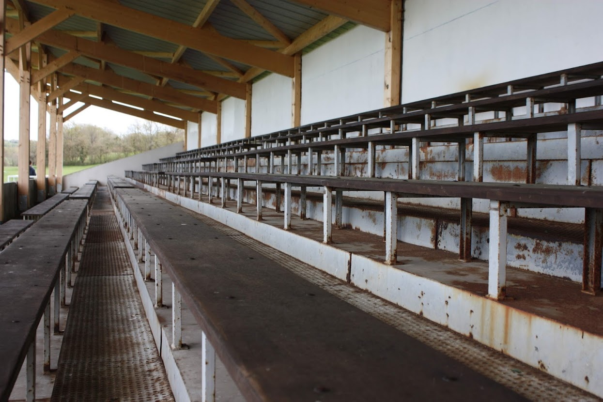
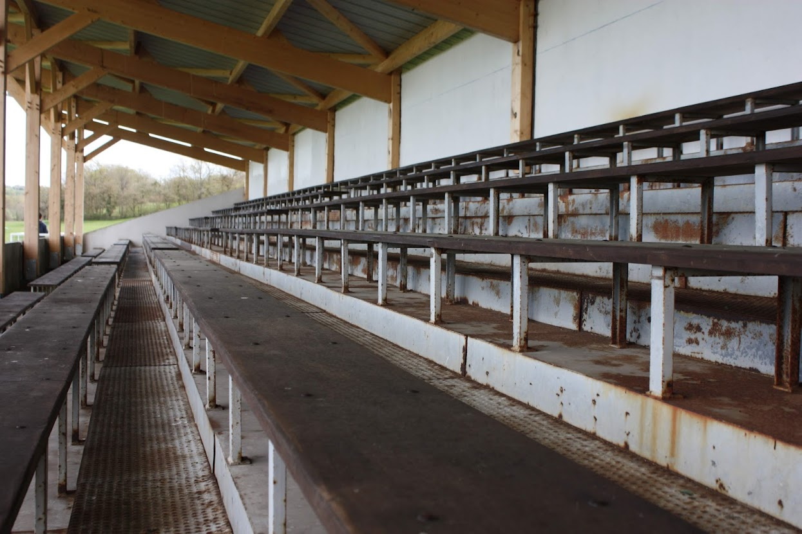
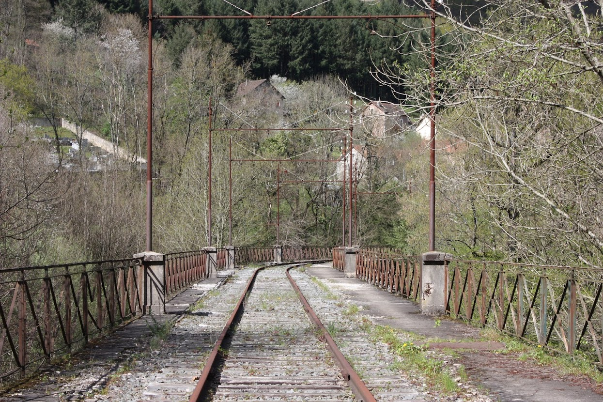
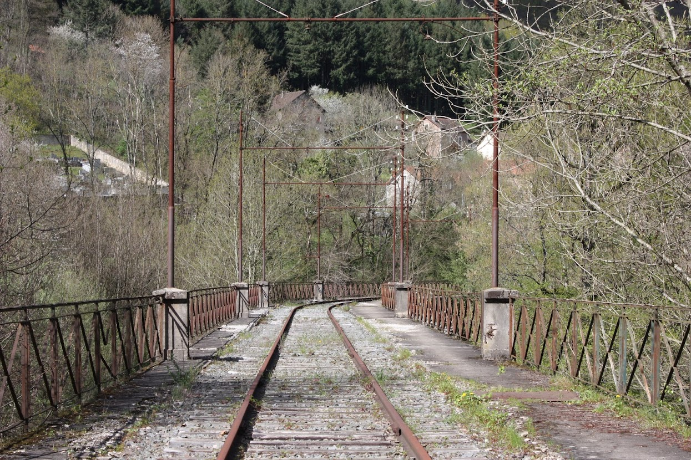

Java
Lowatem, Pong, Graphes
Processing, NetBeans
Java
Lowatem, Pong, Graphes
Processing, NetBeans

Pong
Project
Creation of a pong game and a design document from a given code.
Result
Functional Processing game, with a 4 player mode, a 4 ball mode and a pause mode, so I added obstacles for balls and vortexs that allow balls to teleport.
I also created a menu.


Tools
Java, Processing, Mathematic and Logic.
Skills learned
Creation and modification of elements that interact with their environment and with each other and creation of a graphical interface.

Lowatem
Project
Creation of level to an existing game, then realization of an AI who plays her game strategy face to other students's AI.
Result
I coded 12 levels of this game and create an AI that plays the best shot who is the one who does the most damage on the opponent, that is determine by mathematical methods.
IA Lowatem report by Chaud Valentin and Genetet Maud

Tools
Logic, Java, Netbeans
Skills learned
Be patient, create AI, persevere.
Algorithmic exploration of a problem
Project
Make an algorithm that finds the shortest path between 2 vertices of a graph
Result
Be able to generate graphs automatically, select two vertices and display the shortest path as quickly as possible.
Outils
Logic, Java, Netbeans
Skills learned
Use of Dijkstra and A* algorithm, use of jBotSim, use of graphs


Web
CafePierre, Snake, KingTong's
Html, Css, JS
Web
CafePierre, Snake, KingTong's
Html, Css, JS
CaféPierre
Group Project
Creation of an environment website
Result


Tools
HTML5, CSS3, JavaScript, Python
Skills learned
Creation of a responsive website, creation of a python script generating graphics and organization of a team.

Snake
Personnal Project
Creating a Snake Game
Result
Tools
HTML5, CSS3, JavaScript
Skills learned
Creation of a game algorithm and a responsive and modular website according to the parameters of the game.
KingTong's
Project
Creation of a fictional business, and creation of his website.
Result
Tools
HTML5, CSS3
Skills learned
Creation of a fixed and responsive website, search for UX/UI trends.


System
Automatic creation of Web page, VM instalation
Linux, VMWare, Bash
System
Automatic creation of Web page, VM instalation
Linux, VMWare, Bash
Automatic creation of Web page
Project
Creation of a script that automatically generates web pages from a “storyboard”
Result
Functional Bash script and representation of how the script works with the diagram on the right

Tools
Bash, HTML5, CSS3
Skills learned
Creating a Bash script, and Bash function Integrating PDF and soundtrack.

VM instalation
Project
Complete installation of a Linux virtual machine, with installation of Vscode, Rust and an XFCE and Git desktop.
Result
Project report by Genetet Maud and Menier Thomas

Tools
VMWare, rust, rust-analyzer, bash, git, Xubuntu, vscode
Skills learned
Installation of an operating system, study of different software and implementation. Creation of a software architecture, and installation of devices. Creation of administrative rights.


Database
Grave et Cie
SQL, WinDesign
Database
Grave et Cie
SQL, WinDesign

Grave et Cie
Project
Propose an inventory organization solution.
Result
Realization of a Conceptual Data Model and a database creation script, elaboration of SQL queries, design an application model with her functionalities.


Tools
WinDesign, SQL Server Management Studio
Skills learned
Create and use a database, make SQL commands.

.gif)
Art
Disparition Urbaines, Visual JPO 2022
Photography, Gimp, Design, ...
Art
Disparition Urbaines, Visual JPO 2022
Photography, Gimp, Design, ...
Disparition urbaines
Project
Photo project created with Pessac Animation following the urbex made in the Dordogne, to document abandoned places.
Result
Exhibition at the Town Hall of Pessac of ten large-format photographs for the Urban Vibrations Festival and creation of an 80-page book with photos and texts of our project between the Corrèze and the Cantal, self-published by the Town Hall of Pessac
Tools
Photography, Photoshop
Skills learned
Artistic creation and artistic direction of a group project.
 


 



Visual JPO 2022
Project
Creation of the visuals of the 2022 Open Day of the IUT of the IT department of Bordeaux for the presentation of the Bachelor Universitaire de Technologie of computer sciences.
Result
Creation of main poster, program, site map, badges, signage and flyers.
These achievements were selected to be the visuals of the day and were subsequently taken over by the Professional Bachelor's degree of the same department.

Tools
Gimp, logiciel de création de QRCode.
Skills learned
Uses Gimp to create designs like retro gaming effects and department plans reminding Computer Culture. Integration of specific typologies. Analysis of graphic trends and design 2022, creation of QRCode.

 maud.genetet@gmail.com
maud.genetet@gmail.com +33 6 02 62 94 57
+33 6 02 62 94 57 github
github